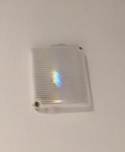
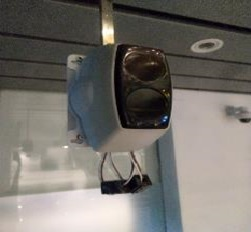
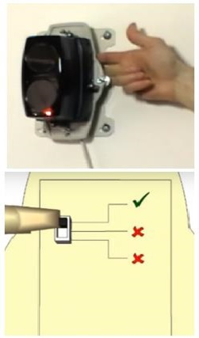
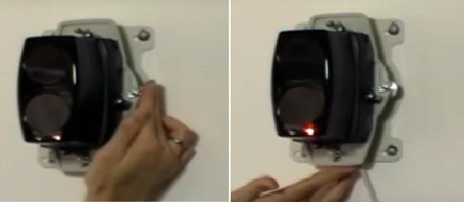
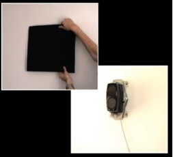
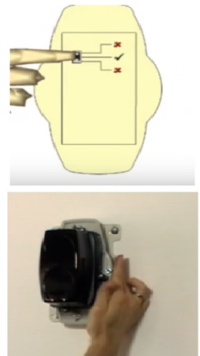
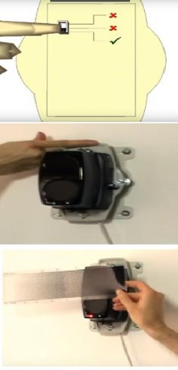
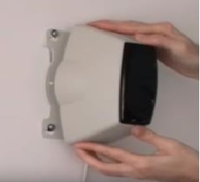

| Bước 1 |
Do gương phản xạ hoặc có vật chắn ngang chùm tia phản xạ của đầu báo BEAM. - Tiến hành kiểm tra vị trí trương quan của đầu báo beam và gương phản xạ. Nếu giữa đầu báo beam và gương có vật chắn ngang thì lập tức loại bỏ để đàu báo beam trở lại trạng thái hoạt động bình thường. - Nếu không có vật chắn ngang đầu beam và gương phản xạ, tiến hành kiểm tra gương phản xạ có bị bẩn không. Nếu bẩn phải vệ sinh gương phản xạ để đầu báo beam hoạt động lại bình thường. |
 |
| Bước 2 |
Nếu đầu báo beam bị lệch làm đầu báo beam bị lỗi thì tiến hành chỉnh lại đầu báo beam theo trình tự các bước như sau: |
 |
| Bước 2.1 |
Tháo nắp bảo vệ đầu beam ra. Sau đó gạt nút điều khiển chế độ hoạt động đầu báo beam lên trên cùng. |
 |
| Bước 2.2 |
Tiến hành chỉnh đầu báo beam sang trái hoặc sang phải bằng các núm điều chỉnh bên trái hoặc phải cho đến khi đèn vàng có tần suất nhấp nháy chậm nhất. Dừng lại và tiến hành chỉnh núm phía dưới hoặc phía trên sao cho đèn vàng sáng hẳn và ngừng nháy |
 |
| Bước 2.3 |
Tiến hành kiểm tra sự phản xạ của gương phản xạ và của đầu báo beam bằng cách che gương lại. Nếu sau khi che gương lại đèn vàng trên đầu báo Beam tắt thì ta tiến hành bước tiếp theo |
 |
| Bước 2.4 |
Tiến hành nhấn nút Operation mode trên đầu báo beam về vị trí giữa. -Tiến hành chỉnh tiếp đầu báo beam bằng núm chỉnh bên trái. Thử bằng cách vặn núm lên trên. Nếu đèn vàng nháy thì dừng và vặn ngược lại Nếu đèn đỏ bắt đầu nháy thì tiếp tục vặn và vừa vặn vừa đếm số vòng cho đến khi đèn đỏ ngừng nháy sáng và tắt hẳn vẹn thêm vòng nữa Nếu đèn vàng nhày thì dừng lại và vặn trả lại 1 vòng ở vị trí đèn cả 2 đèn đều tắt hẳn |
 |
| Bước 2.5 |
Tiến hành bật nút Operation Mode trên đầu báo Beam về chế độ Operation về vị trí dưới cùng. Và tiến hành kiểm tra hoạt động của đầu báo beam bằng cách dùng tay nhấn vào 4 góc của đầu báo beam và đảm bảo khi nhân ở mõi vi trí thì đèn led màu đỏ và vàng đều nhấp nháy. - Tiếp tục kiểm tra hoạt động của đầu báo beam bằng tấm decal kiểm tra cho đến khi báo cháy. và reset hệ thống trở lại bình thường. - Tiếp tục kiểm tra gương phản xạ bằng cách che gương lại thì đầu báo beam báo lỗi. thì đầu báo beam đã hoạt động bình thương. |
 |
| Bước 2.6 |
Lắp lại nắp bảo vệ đầu báo beam và reset hệ thống |
 |
{kind=link}
{kind=link}
{kind=link}
{kind=link}
{kind=link}
{kind=link}
{kind=link}
{kind=link}